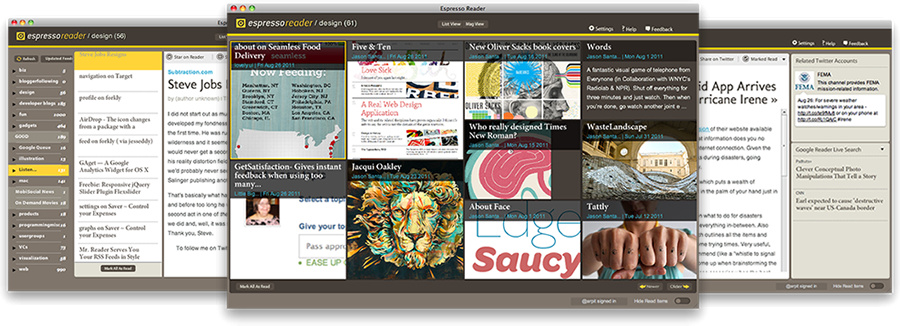

EspressoReader is a desktop client for Google Reader that helps you manage and sift through your feeds efficiently and in a visually appealing interface.
For mac, win and linux
Requires Adobe AIR, you can download it from here

Features
Different views
Pick your favorite view to read your feeds in
Twitter profile lookups
Find relevant Twitter profiles associated with different stories
Google Reader live search
Find other popular stories related to the story you are reading
Quick Jump
Tap your spacebar to quickly jump to any feed or category in your subscriptions
Share on Twitter
Share your favorite stories with your friends on Twitter